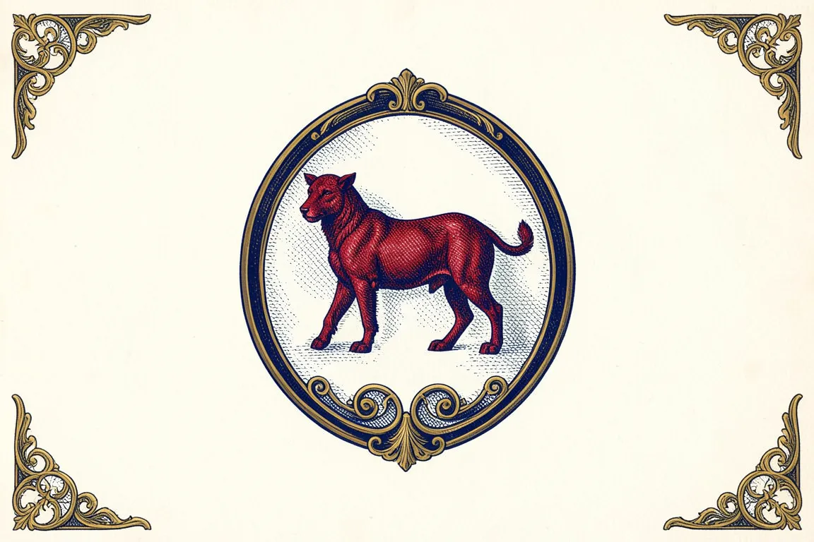

logo · 1860–1910 · also: Engraved trademark, Chromolithographic label, Trade card mark
A pictorial trademark from the age of the first trademark registers. A figure, an animal or a scene sits in an oval or a cartouche, with engraved line shading, banners and three or more typefaces on one label.

Core thesis
A mark earns trust when it shows a rich, finished picture and the full name of the maker, so the buyer sees the cost and the care behind the goods.
Design principles
Put a pictorial device at the centre: an animal, a figure or an object, at 50–70% of the label height.
Close the device in an oval, a circle or a cartouche, with a border band 6–10% of the mark width.
Shade with engraved hatch lines at 0.3–0.6 mm pitch in print; let 2–4 tones come from line density, not from tint.
Set the name on an arc or a ribbon banner that follows the frame, in 2–4 typefaces of different classes.
Fill the corners with scrolls, medals or rules, so that less than 20% of the area stays empty.
Print in 1–2 inks for an engraving, or in 4–8 flat stones for a chromolithograph.